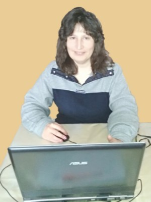

Надія Самчук

Досвід
Менеджер Служби Підтримки 4Service Holdings GmbH (ЦП Північ - Росія/Білорусія) (Консалтинг / Аудит)
- Створено нові шаблони та скрипти.
- Вдосконалено систему автовідповідей.
- Введено систему КРІ та прийняття участі у її перегляді.
- На час тимчасової призупинки роботи із-за пандемії в рамках змін стратегії по переорієнтації Компанії працювала у сфері холодних та гарячих продаж.
Освіта
Київський Державний Технічний Університет Будівництва і Архітектури
вересень 2016 — лютий 2022 | Austria
Скіли
- Грамотна українська та російська мови.
- Прагнення до навчання та професійного розвитку.
- Умію працювати в стресових ситуаціях та з людьми різного темпераменту, різного віку, різного інтелектуального розвитку.
- Уважно аналізую проблеми користувача і швидко знаходжу актуальні варіанти їх вирішення
Контакти
ел.почта haj.schastytj@gmail.com
телефон +38 096 33 99 66 8
посилання на Фейсбук сторінку